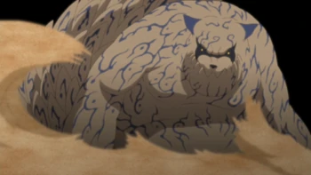
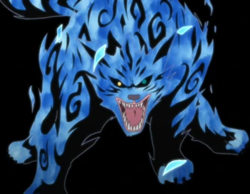
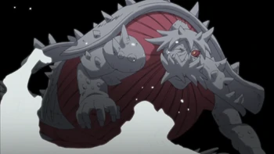
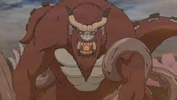
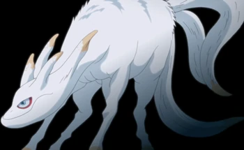
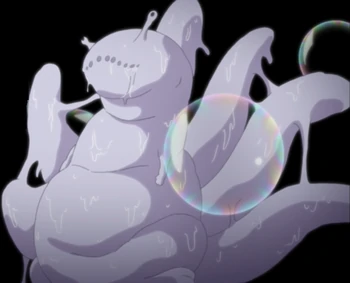
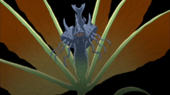
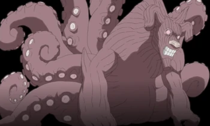
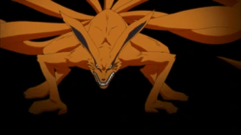

Bijuu
Bijuu (尾獣, bijū?) adalah sembilan monster berekor dalam kisah fiksi Naruto karya Masashi Kishimoto. Selain dalam Naruto, Bijuu juga eksis dalam legenda Jepang. Makhluk-makhluk ini diceritakan memiliki ukuran tubuh yang sangat agung dan memiliki jumlah ekor yang berbeda-beda sehingga mereka dapat dibagi berdasarkan jumlah ekornya. Selain ukuran tubuhnya, mereka juga memiliki jumlah chakra dalam jumlah yang sangat agung. Umumnya mereka adalah makhluk setengah dewa dan ditakuti warga, tetapi dalam Naruto beberapa di selangnya tidak memiliki inteligensia yang memadai yang diperlukan untuk menggunakan chakra miliknya. Semua Bijuu yang disegel dalam tubuh manusia disebut Jinchuuriki (人柱力, yang berfaedah host atau tuan rumah) dan memberikan kekuatan agung untuknya. Istilah Jinchuuriki sendiri hanya digunakan di dalam dunia Naruto. Bahkan dalam beberapa kasus, seorang Jinchuuriki memiliki kekuatan yang lebih agung daripada Bijuu yang ada di dalam tubuhnya. Hal ini dimungkinkan karena mereka memiliki kemampuan untuk mengontrol kekuatan Bijuu secara efektif, sementara beberapa Bijuu tidak memiliki kemampuan itu.
Berikut 9 bijuu:
        